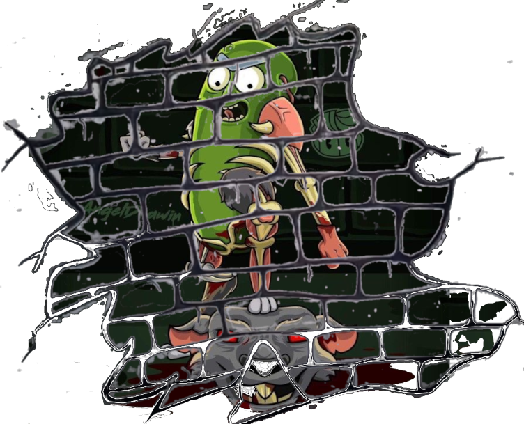

Welcome Pickle Rick
Uma homenagem ao melhor personagem!!!
"Pickle Rick" é elogiado por sua originalidade, humor e pela forma como subverte as expectativas dos espectadores. A imagem de Rick como um pepino tornou-se icônica, e o episódio é frequentemente citado e referenciado pelos fãs da série.
Assista o episódio
